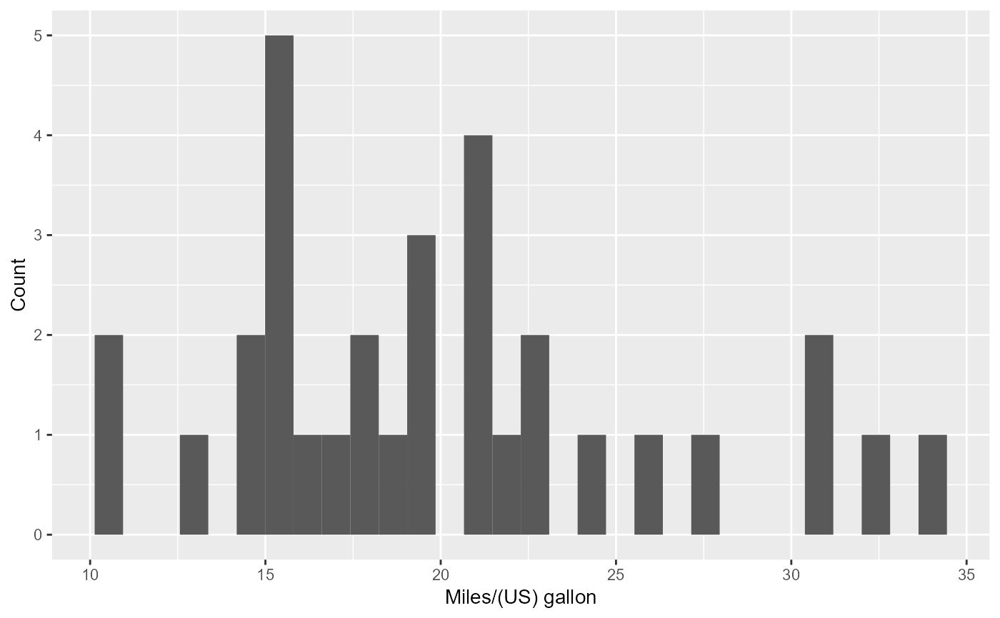

create_histogram
create_histogram.RdCreates ggplot histograms with x labels, different coloured qualities, and specifiable x-axis, y-axis, labels bundled into a workflow. It is then applied to a workflow where the input is training data, and the workflow is used alongside cowplot commands to create the visualization.
Arguments
- df
A training data frame or data frame extension (e.g. a tibble).
- x
The column within data_frame that should serve as the x axis.
- group
The column within data_frame that the histogram should be coloured by.
- x_lab
A string if a label for the x-axis is required. Default is "" (no axis label).
- y_lab
A string if a label for the y-axis is required. Default is "" (no axis label).
- font_size
Size of the font used in the histogram. Default is 10.5.
Value
A histogram created by ggplot. The histogram should have different colours based on the quality of wine. The x-label should always show, while the y-axis is only shown if add_y_lab = TRUE. Returned histogram should work well with cowplot so the histograms are joined as one visualization.
Examples
create_histogram(df = mtcars, x = mpg, group = am,
x_lab = "Miles/(US) gallon", y_lab = "Count", font_size = 10.5)
#> `stat_bin()` using `bins = 30`. Pick better value with `binwidth`.
#> Warning: The following aesthetics were dropped during statistical transformation: colour
#> and fill.
#> ℹ This can happen when ggplot fails to infer the correct grouping structure in
#> the data.
#> ℹ Did you forget to specify a `group` aesthetic or to convert a numerical
#> variable into a factor?
